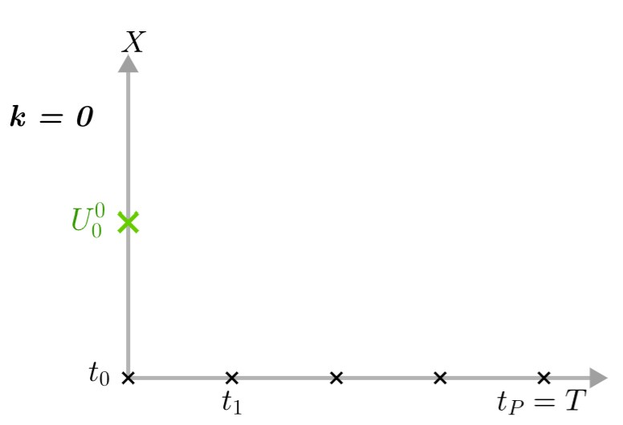
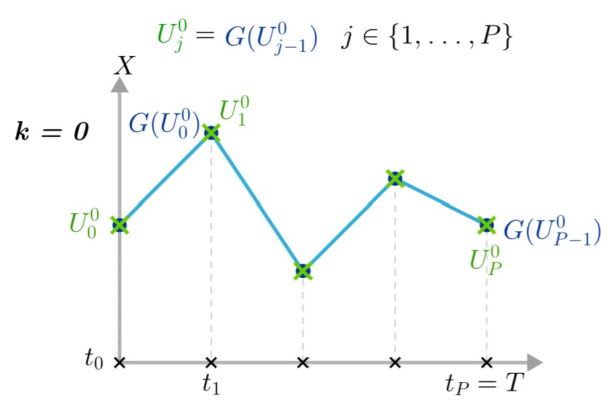
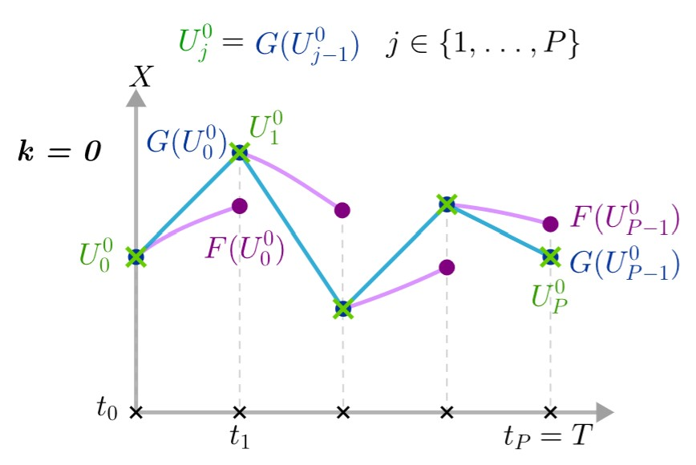
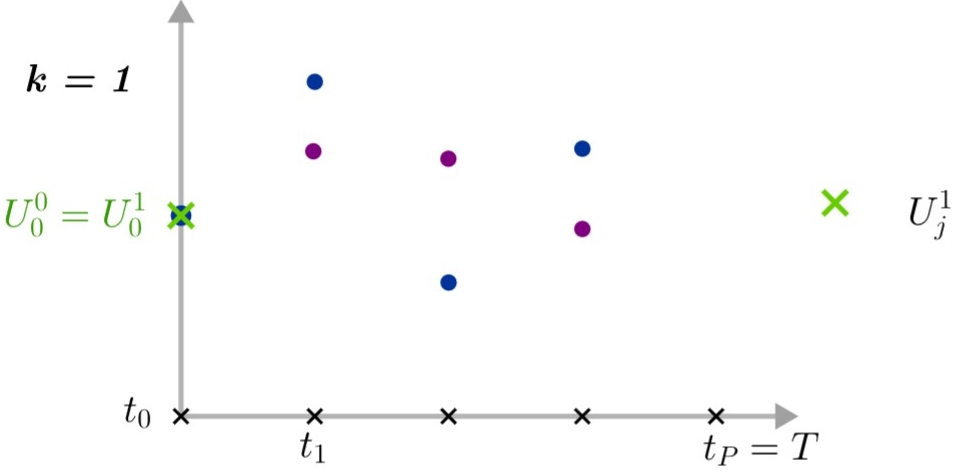
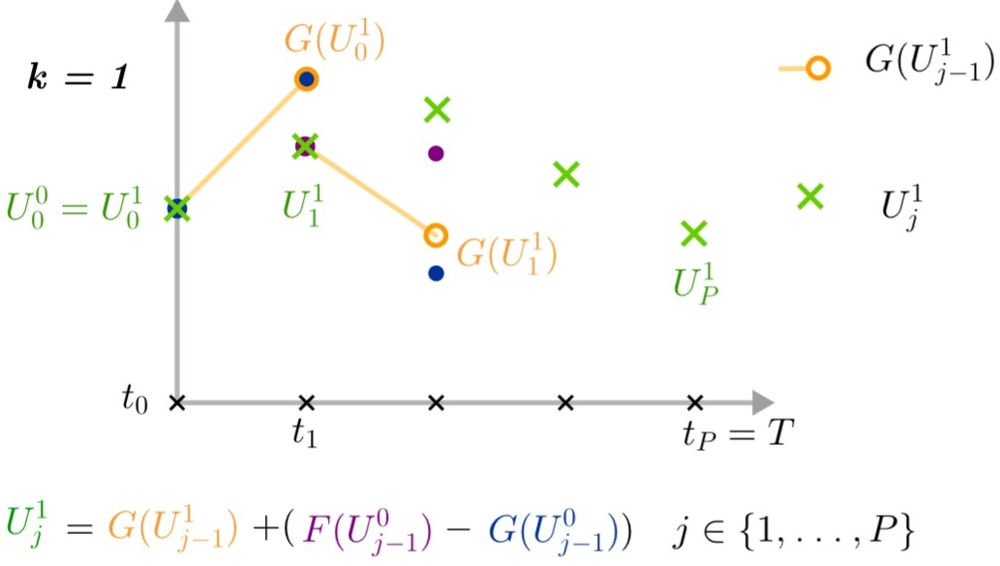
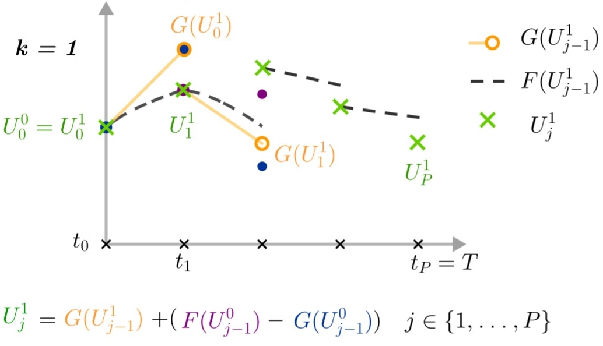

Parareal method
1. Explanation of the method
Para-real method is a parallel-in-time integration method which was introduced in 2001 by Lions, Maday and Turinici (see Parareal). Parareal computes the numerical solution for multiple time steps in parallel and it is categorized as a parallel-across-the-steps method.
Parareal method needs a decomposition of the time interval \([t_0,T\)] into $P$ slices \([t_j,t_{j+1}\)] with \(j\in\{0,\dots,P-1\}\), where \(P\) is the number of process units. As we want to parallelize the algorithm, each time slice is assigned to one process.
We denote by \(F\) an integrator which is of high accuracy and \(G\) which is of low accuracy. Also, \(F\) will be very expensive in terms of calculation but very accurate, and \(G\) will be very cheap but very imprecise. We denote by \(\Delta t_F\) the time step and by \(\Delta t_G\) the coarse time step.
We denote by \(U_j^k\), \(j\in\{0,\dots,P\}\) the initial point at time \(t_j\) and at iteration \(k\). We also denote \(F(U_{j-1}^k)\), \(j\in\{1,\dots,P\}\) the result of the fine integrator between \(t_{j-1}\) and \(t_j\) which starts from the initial point \(U_{j-1}^k\) at iteration \(k\) and respectively \(G(U_{j-1}^k)\), \(j\in\{1,\dots,P\}\) the result of the coarse integrator between \(t_{j-1}\) and \(t_j\) which starts from the initial point \(U_{j-1}^k\) at iteration \(k\). Then, a series of steps is performed until the solution of the system converges.
At iteration \(k=0\) :
-
Step 1 : At iteration \(k=0\), we have an initial point \(U_0^0=X_0\).
 -
Step 2 : We start by applying the function \(G\) on all intervals \([t_j,t_{j+1}\)] and we denote by \(U_j^0=G(U_{j-1}^0)\) the values of \(G\) at \(t_j\).
Note that this part of the method must be done sequentially because if we parallelize the task, the process \(j\) should wait until the process \(j-1\) has finished before starting.
 -
Step 3 : We can then calculate from each \(U_j^0\) the fine solution between \(t_j\) and \(t_{j+1}\) : \(F(U_j^0)\). This is an operation that must be parallelized.

At iteration \(k=1\) :
-
Step 4 : We can then continue to iteration \(k=1\) where we need the values \(G(U_j^0)\) and \(F(U_j^0)\) calculated at the previous iteration (\(k=0\)).
We will also keep the initial point at time \(t_0\) : \(U_0^1=U_0^0\).
 -
Step 5 : We can then calculate \(G(U_0^1)\) which allows us to obtain the point \(U_1^1\) by the following formula:
\[U_j^1=G(U_{j-1}^1)+(F(U_{j-1}^0)-G(U_{j-1}^0)).\]Note that due to \(U_0^1=U_0^0\), we have \(G(U_0^1)=G(U_0^0)\) and therefore \(U_1^1=F(U_0^0)\).
We then compute in the same way the following \(G(U_j^1)\) and the associated \(U_{j+1}^1\) points. This step can be done sequentially for the same reason as in step 2.
 -
Step 6 : We can then calculate from each \(U_j^1\) the fine solution between \(t_j\) and \(t_{j+1}\) : \(F(U_j^1)\). This is an operation that must be parallelized.
Note that due to \(U_0^1=U_0^0\), we also have \(F(U_0^1)=F(U_0^0)\).

Then we repeat steps 3 to 6 until \(U_j^k-U_j^{k-1}\rightarrow 0 \quad \forall j\in\{0,\dots,P-1\}\).
We have at iteration \(k\):